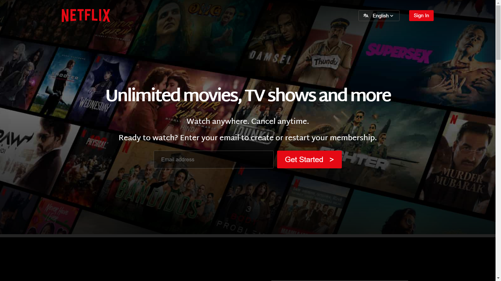
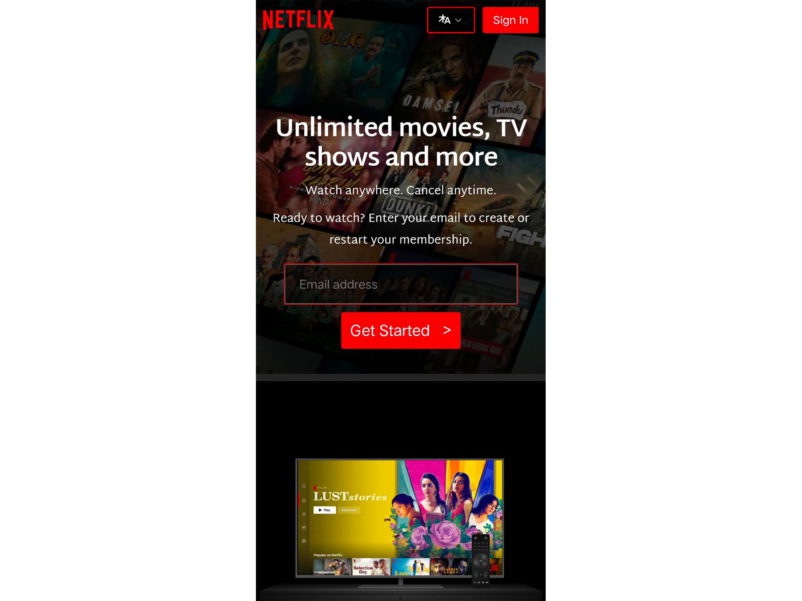

Netflix UI Clone
Overview
Welcome to Netflix UI Clone! This project is a frontend web application that mimics the interface of Netflix. It dynamically displays a FAQ section with expandable answers using HTML, CSS, and JavaScript.
- View Live: Netflix-India UI
Project Structure
- Source Code: Notebook.com
- Description: Netflix UI Clone is designed to replicate the user interface of Netflix, focusing on the FAQ section. It dynamically inserts questions and answers and handles click events to show or hide the answers.
- Languages: HTML, CSS, JavaScript
Contents
- HTML Structure
- Defines the structure of the Netflix UI clone interface.
- Includes containers for displaying the FAQ section.
- CSS Styling
- Styles the application to resemble the Netflix UI.
- Uses responsive design principles for compatibility across devices.
- JavaScript Functionality
- Dynamically inserts a FAQ section with questions and answers.
- Handles click events to show or hide the answers.
- Provides a seamless user experience through interactive elements.
Note: This project demonstrates the use of DOM manipulation and event handling in JavaScript to create an interactive FAQ section.
Output Screenshots
 How to Use
- Clone the repository:
git clone https://github.com/RahulP-Here/my-web-dev-evolution.git - Open index.html in a web browser to start using Netflix UI Clone.
Explore the functionality of Netflix UI Clone by interacting with the FAQ section. Experience the user interface designed to emulate Netflix's design.